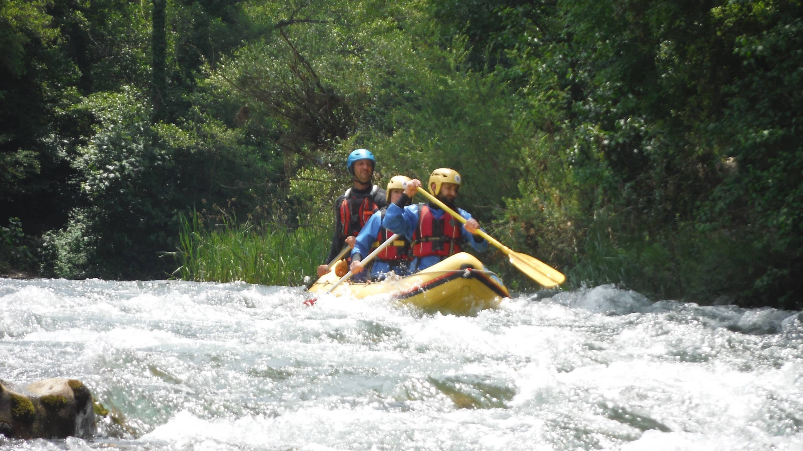

About Campania
Campania is an administrative region of Italy. Located on the south-western portion of the Italian Peninsula, with the Tyrrhenian Sea to the west, it includes the small Phlegraean Islands and Capri for administration as part of the region. Coastal areas in the region were colonised by the Ancient Greeks between the 8th and 7th centuries BC, becoming part of the so-called Magna Graecia. Campania is rich in culture, especially in regard to gastronomy, music, architecture, and the presence of archaeological and ancient sites such as Pompeii, Herculaneum, Oplontis, Paestum, Aeclanum, Stabiae, and Velia. The name of Campania is derived from Latin, as the Romans knew the region as Campania Felix, which translates into English as "fertile countryside" or "happy countryside". The rich natural beauty of Campania makes it highly important in the tourism industry, with the city of Naples, the Amalfi Coast, Vesuvius, and the islands of Capri and Ischia continuing to be major attractions.
About Me
My name is Carmine and I live in Ireland. I'm a student of Code Institute and this is my first project where I would like to best represent the place where I come from, with the hope that it will help all people who want to visit this beautiful Italian region and that it is a magnifying glass on the most beautiful places it has to offer and to dispel the clichés that see this territory only as sun, pizza and Camorra.